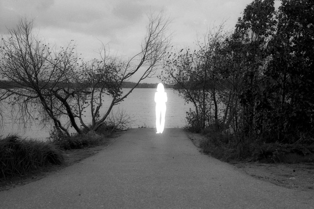
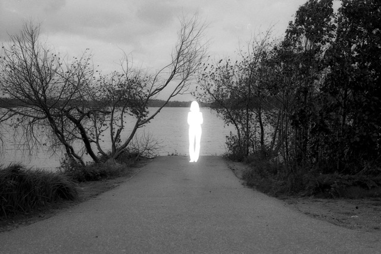

Digital Echoes: A Double Exposure Journey
Digital Echoes: A Double Exposure Journey is a fine art photography project that explores the juxtaposition of the digital and the natural world through the medium of analogue double exposure photography. The project's primary aim is to engage viewers in a dialogue about the coexistence of these two seemingly separate worlds and how they intersect and influence one another. Digital Echoes is an ongoing journey, this is the first test.
The process:
I begin by capturing various images using a film camera. These images serve as the foundation for each photograph, representing the real. In the second phase, I introduce AI genereated and digitally created silhouettes into these landscapes using double exposure techniques. These silhouettes symbolize the encroachment of digitalization and its effects on our environment, offering a stark contrast to the real analogue exposures. The incorporation of artificial intelligence further advances the concept of a virtual digital realm in which only the notion or representation of the tangible world remains. My goal is to create images that are both visually striking and thought-provoking, encouraging viewers to reflect on the evolving relationship between the physical and digital domains, a simulacrum in the desert of the real.